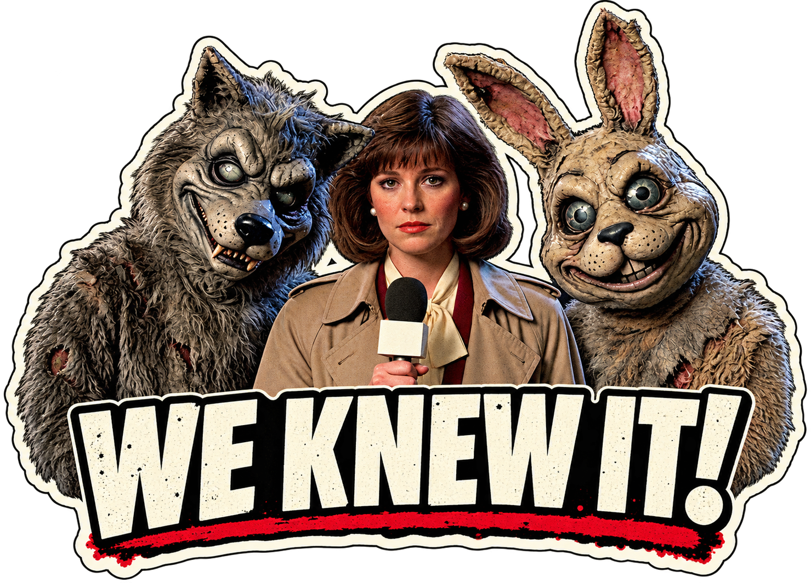
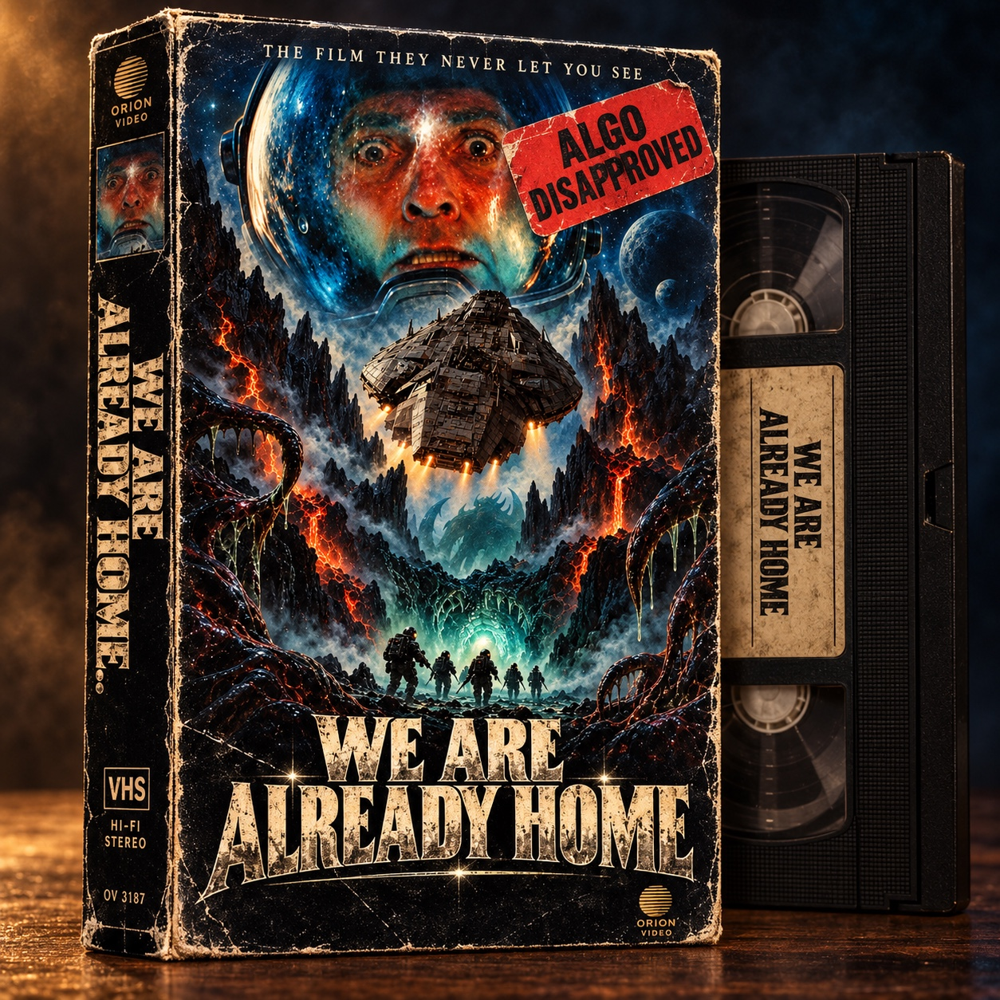

II / PRINCIPAL PHOTOGRAPHY · 3:55
Making a Masterpiece
Huge rigs. Tiny planets. Absolutely unearned confidence.
Watch on YouTube ↗PIXEL RECORDS PRESENTS / THE ORIGINAL SHORT
A scary story. A very unimpressed ALGO. Explore the making-of ↓

THE CREW / STILL BELIEVING IN THE PROJECT
AMBITION HAS NO SENSE OF SCALE
A terrified astronaut. A lens worth more than a house. Alien eggs made from beach balls. Everyone gave everything. ALGO gave her opinion.
01 / SCREENING ROOM
II / PRINCIPAL PHOTOGRAPHY · 3:55
Huge rigs. Tiny planets. Absolutely unearned confidence.
Watch on YouTube ↗III / WE’LL FIX IT IN POST · 3:28
The footage is ruined. The orchestra is booked. Edith is paying.
Watch on YouTube ↗
IV / BREAKING NEWS · 1:43
The film was fake. The budget was real. The director is explaining himself to a cat.
Watch on YouTube ↗“I’ve been preparing for this film my entire life.”VICTOR · PUPPETEER
02 / THE PEOPLE RESPONSIBLE

03 / PRODUCTION EVIDENCE
Mara built a world. Two puppeteers made it walk. Leon brought enough camera to photograph an actual planet.
This is the archive of a fictional production that took itself very, very seriously.
DOWNLOAD THE STAGE STILL ↓FROM THE PIXEL RECORDS VAULT
Suppressed by ALGO.
Mostly through lack of interest.
$13,000,000 fictional production budget
WATCH THE FORBIDDEN FILM ↗A fictional collector’s edition. No purchase required.

PRESS MATERIAL / NO OSCAR GUARANTEED